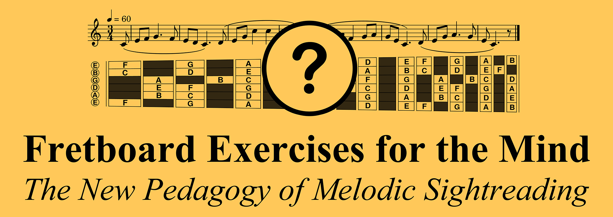

Hello! I am J.J. Olson and this is my brief but spectacular* GFA poster on how to teach guitar sightreading as an enjoyable way to learn the whole fretboard. It's "Fretboard Exercises for the Mind".

(Part of the Symposium for Guitar Scholars led by Professor Jonathan Leathwood during the 2026 Guitar Foundation of America International Convention, June 22-27, 2026, in Denver).
Fifty years ago I was a young physicist who joined Bell Labs to solve problems in software analysis and eventually data modeling. Upon retirement, I applied that experience to the problem of reading music anywhere on the fretboard and, in particular, to the questions of what mental data structures were best suited to that task and how to develop them.
My poster shows three key points for building effective mental data structures for sightreading, plus a couple of sections on related topics. You can click on a section in the Contents below, or step through them in sequence using the Next► button in the navigation bar at the top of every page. The navigation bar also has an icon that returns you to this table of contents.
If you'd like to continue the conversation, contact me at jjocanoe@gmail.com.
* see "Brief But Spectacular" on Wikipedia and PBS